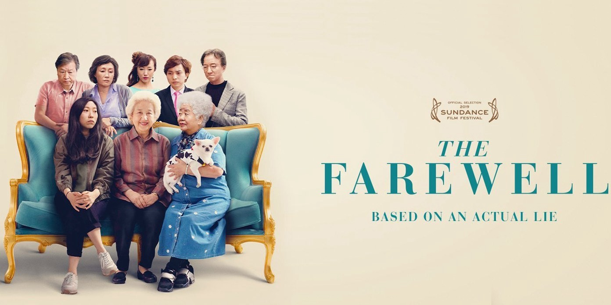
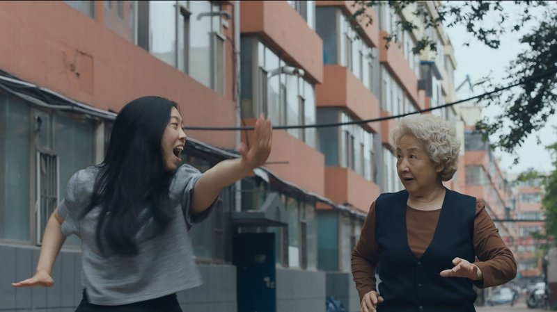
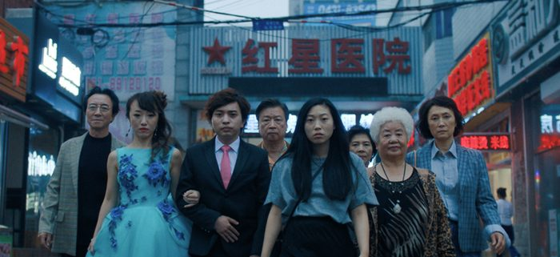
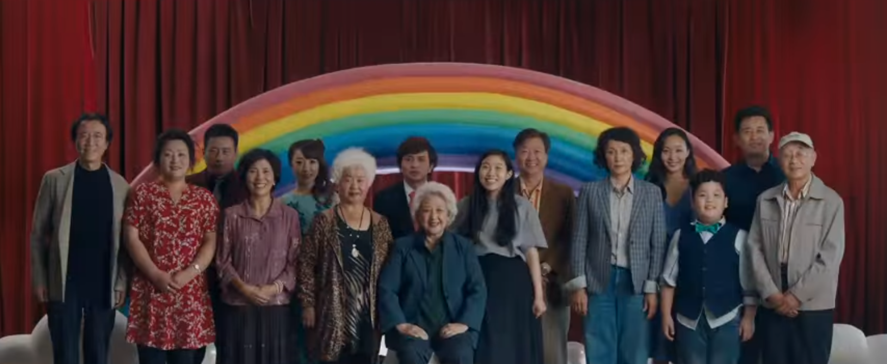
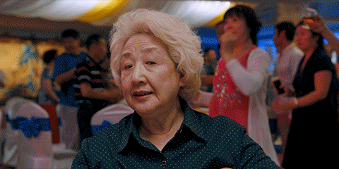

The Farewell directed by Lulu Wang

*Minor spoilers ahead*
If you need a good cry, you’ve come to the right place.
A24 released yet another movie to tug at your heartstrings over the summer called The Farewell directed by Lulu Wang. The film focuses on Billi questioning her family's values and Billi trying to keep it together in front of her dying grandmother. The comedy-drama stars Awkwafina the well-known actress and comedian rapper. You can expect her to make you laugh but you’ll be surprised at how well she portrays emotions of guilt and grief. The film has a simple plot line but the acting and emotions are intense, making it a powerful and memorable movie you won’t regret watching.

From the very beginning, Wang establishes the strong relationship Billi has with her beloved grandma, Nai Nai. And trust me, she becomes a grandma to all of us. She immediately asks Billi why she’s awake if she should be sleeping and bombards her with caring questions like, “Are you wearing a hat? And to be careful because “in New York, people will steal earrings”. Hopefully, we all have someone who she reminds of us in our life. You can easily recognize your own “Nai Nai” and then imagine what it would be like if you were in Billi’s situation.

Wang also sets up the significance of American and Chinese culture within the first few minutes by having subtitles. Don’t let this turn you away. There’s beauty in creating a realistic film where Billi goes to China and having everyone speak chinese there. That’s the whole point. There’s a clash between American and Chinese values. Should Nai Nai find out about her cancer because that’s what a typical American would do? Or should Billi keep it from her and follow what her entire family is doing? The reason why the family won’t tell Nai Nai is because it is now the family’s burden to carry the pain. Nai Nai should have the pleasure of living life without worrying about her health. Yet Billi questions if Nai Nai should know ahead of time to say goodbye.

If for some reason the tense and tragic dialogue doesn’t get to you, the music definitely will. There’s no escaping the soundtrack. There’s numerous scenes where there’s no dialogue or action. There’s a lot of shots where you just hear the melancholy music. That’s enough to tell you what’s going on. There’s a good chance you might even save some of the songs to listen to on a rainy day and pretend you’re in a music video.

Overall, the movie keeps you grounded in a sense. It can either transport you to a new country and culture in a sensible way or it can remind you of home. If that wasn’t convincing enough, it has a 99% rating from Rotten Tomatoes. Now go enjoy the movie and remember to bring some tissues!